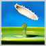

Welcome
Plants began to be studied even by scientists of Ancient Greece. During the Middle Ages, the study of plants was mainly carried out by monks. Later, during the great geographical discoveries, a breakthrough occurred in the study of plants, as new specimens appeared for study. At that time, it was concluded that the distribution of plants is influenced by the geographical location of territories, their height above sea level. In the 18th century, the scientist K. Linnaeus played an important role in the study of plants. He described the vegetation cover of different climatic zones. In the 19th century, the development of plant ecology was influenced by such famous scientists as Humboldt, Lamarck, Watson. Darwin's evolutionary teachings had a great influence on the development of the science of plants and their interaction with the environment. But a special contribution to the development of plant ecology was made by the Danish scientist Warming, at the end of the 19th century, thanks to his works, plant ecology was brought into a separate section of science. Warming systematized the factors that trough affect the life of plants.
Plant ecology techniques
When a scientist uses the observation method, he should not interfere with the natural system. The observation method is the first and main method used by researchers. Experiment has a wider application. The essence of the experimental method is that the scientist deliberately changes certain parameters. Experiments on plants are carried out both in the field and in the laboratory. In plant ecology, both univariate and multifactorial experiments are used. The method of ecological series is widely used to study the relationship of plants to the environment.
Environmental factor
In ecology, the environment is understood as a set of material bodies, phenomena, types of energy that affect a living being. Different elements of the environment are perceived differently by living organisms. Environmental factors are elements that have a strong impact on the life of organisms.
About
The adaptation of the organism to new conditions of life occurs in the process of long evolution, this leads to the fact that the organism adapts to new conditions. Adaptation makes it possible to survive not only for one specific individual, but for the entire species. In order to understand whether the adaptation process is successful, attention should be paid to the increase in the breeding rate and the mortality rate of the species.
Plant reaction
I react to the effects of environmental factors by changing the state or by some action, this helps the species to survive. In order not to become a victim of the negative impact of the environment, living organisms can either avoid it or acquire endurance. The first method is practically not available to plants. Plants are forced to adapt, change their structure and life processes. These changes can be of two types, the first includes modification changes that disappear in the individual and its offspring, when the negative impact factor ceases to act and genotypic changes - which are hereditary, that is, do not disappear.
Image Gallery
Role of plants
Read more about the role of plants in the world in other articles.